JavaFXأشكال ثنائية الأبعاد
مقدمة
في هذا الدرس ستتعلم كيف تتعامل مع الكلاسات الجاهزة في الحزمة javafx.scene.shape لرسم أشكال ثنائية الأبعاد ( 2D Shapes ).
كل كلاس موجود في هذه الحزمة تم تصميمه لإعطائك شكل معين يمكنك رسمه في النافذة.
من الأشياء التي يمكنك رسمها في النافذة بواسطة هذه الحزمة:
معلومة تقنية
الحزمة javafx.scene.shape فيها كلاس إسمه Shape يعتبر الكلاس الأساسي لأي كلاس يمثل شكل معين.
و بالتالي فإن أي شكل نريد الحصول عليه سيكون عبارة عن كائن من كلاس يرث منه و لهذا ستجد أن أغلب الكلاسات التي ستتعامل معها في هذه الحزمة تملك دوال مشتركة.
مبدأ الرسم
مبدأ الرسم في جافا هو نفسه مبدأ الرسم الذي تعلمته في مادة الرياضيات حيث أن كل نقطة تريد تحديد مكانها في النافذة يجب أن تحدد لها قيمتين هما X و Y.
في النهاية, تحديد قيمة X و Y معاً يحدد مكان وجود النقطة في النافذة.
الكلاسات التي تستخدم لرسم أشكال ثنائية الأبعاد
الكلاس Line
يستخدم للحصول على خط مستقيم يمكن عرضه بشكل عامودي, أفقي و مائل أيضاً.
المثال التالي يعلمك طريقة رسم خط مستقيم, إعطاؤه لون و إضافته في النافذة.
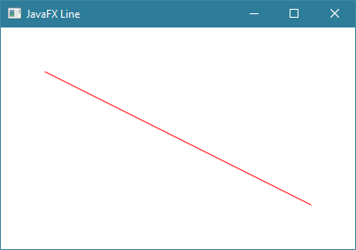
شاهد المثال »
الكلاس Rectangle
يستخدم للحصول على مستطيل أو مربع على حسب الطول و العرض الذي تحدده له.
المثال الأول يعلمك طريقة رسم مستطيل, إعطاؤه لون, إضافته في النافذة و جعله مستدير الزواية.
المثال الثاني يعلمك طريقة جعل زواية المستطيل مستديرة الشكل.
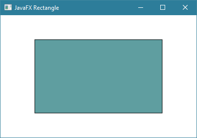
شاهد المثالين »
الكلاس Circle
يستخدم للحصول على دائرة.
المثال التالي يعلمك طريقة رسم دائرة, إعطاؤها لون و إضافتها في النافذة.
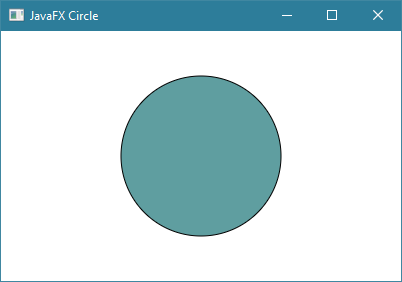
شاهد المثال »
الكلاس Ellipse
يستخدم للحصول على شكل بيضاوي.
المثال التالي يعلمك طريقة رسم شكل بيضاوي, إعطاؤه لون و إضافته في النافذة.
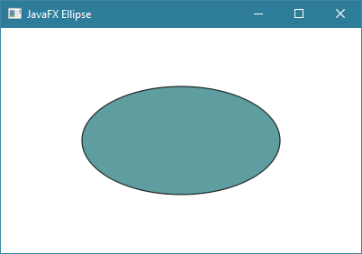
شاهد المثال »
الكلاس Arc
يستخدم للحصول على دائرة غير مكتملة أو دائرة فيها جزء ناقص.
المثال التالي يعلمك طريقة رسم دائرة غير مكتملة, إعطاؤها لون و إضافتها في النافذة.
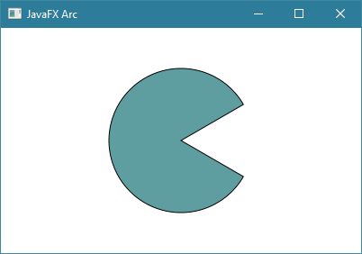
شاهد المثال »
الكلاس Polygon
يستخدم لبناء شكل مغلق يتكون من مجموعة نقاط متصلة ببعضها لذلك يمكنك الإستفادة منه عند الحاجة لرسم شكل خاص مثل مثلث, شكل هندسي معين, خريطة بلد معين إلخ..
الفكرة هنا أنك تنطلق من نقطة معينة, بعدها كل نقطة تضيفها على الشكل يتم ربطها بالنقطة التي قبلها, و في النهاية يتم ربط آخر نقطة تم إضافتها بشكل تلقائي مع أول نقطة تم وضعها حتى يتم إغلاق الشكل.
المثال التالي يعلمك طريقة رسم مثلث, إعطاؤه لون, و إضافته في النافذة.
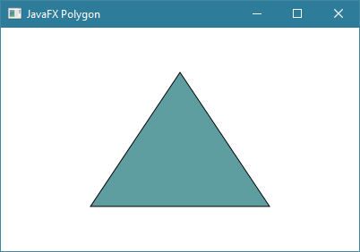
شاهد المثال »
الكلاس Polyline
يستخدم لبناء شكل يتكون من مجموعة نقاط متصلة ببعضها تماماً مثل الكلاس Polygon مع فرق واحد و هو أنه لا يتم إغلاق الشكل الذي يتم رسمه بشكل تلقائي. أي لا يتم وضع خط بين أول نقطة في الشكل و آخر نقطة فيه إن لم تفعل ذلك بنفسك.
المثال التالي يعلمك طريقة رسم شكل يشبه المثلث, و إضافته في النافذة مع الإشارة إلى أننا تعمدنا عدم وضع لون له حتى تلاحظ أنه لم يتم وصل أول و آخر و نقطة.
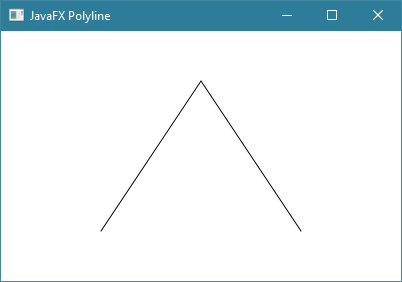
شاهد المثال »
الكلاس QuadCurve
يستخدم للحصول على منحنى رباعي و الذي يشبه الخط الغير مستقيم أو الذي فيه إنحناء واحد.
المثال التالي يعلمك طريقة رسم منحنى رباعي, إعطاؤه لون و إضافته في النافذة.
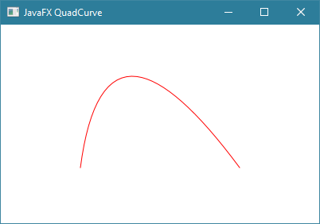
شاهد المثال »
الكلاس CubicCurve
يستخدم للحصول على منحنى مكعب و الذي يشبه خط فيه إنحنائين.
المثال التالي يعلمك طريقة رسم منحنى مكعب, إعطاؤه لون و إضافته في النافذة.
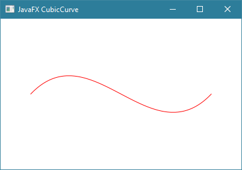
شاهد المثال »
الكلاس SVGPath
يستخدم لرسم الصور التي نوعها SVG في النافذة.
معلومة: هذا النوع من الصور يتميز بأنه يتلائم مع حجم أي شاشة يتم عرضه عليها.
المثال التالي يعلمك طريقة رسم صورة نوعها SVG في النافذة.
شاهد المثال »
الكلاس Path و الكلاس PathElement
في حال كنت تريد بناء شكل معقد لا يشبه أي شكل من الأشكل التي تعلمت طريقة رسمها من الأمثلة السابقة, يمكنك إستخدام الكلاس Path و الكلاسات التي ترث من الكلاس PathElement لرسم الشكل الذي تريده.
المثال التالي يعلمك طريقة رسم أي شكل تريد و تلوينه, و من ثم إضافته في النافذة.
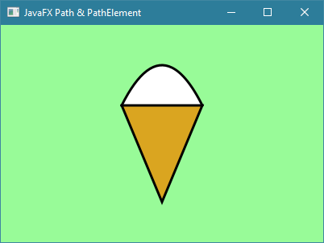
شاهد المثال »
طرق دمج الأشكال الثنائية الأبعاد
في حال كنت تريد دمج الأشكال الثنائية الأبعاد في شكل جديد فيوجد ثلاث طريق أساسية لدمج الأشكال سنتعرف عليها من الأمثلة التالية.
المثال الأول
عملية دمج الأجزاء المشتركة و الغير مشتركة بين الأشكال مع بعضها البعض كما فعلنا في المثال التالي يقال لها Union Operation.
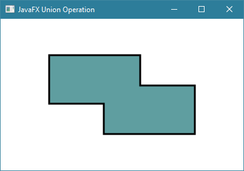
شاهد المثال »
المثال الثاني
عملية دمج الأجزاء المشتركة فقط بين الأشكال مع بعضها البعض كما فعلنا في المثال التالي يقال لها Intersection Operation.
ملاحظة: الشكل الذي يظهر في الصورة عبارة عن الجزء المشترك بين المستطيلين.
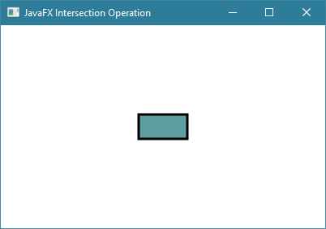
شاهد المثال »
المثال الثالث
عملية حذف أجزاء من الشكل نسبة للأشكال الأخرى التي نقربها منه كما فعلنا في المثال التالي يقال لها Subtraction Operation.
ملاحظة: الشكل الذي يظهر في الصورة عبارة عن المستطيل الأول محذوف منه الجزء المشترك مع المستطيل الثاني.
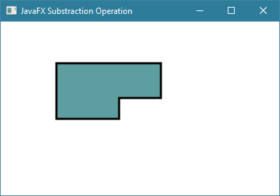
شاهد المثال »

 محرر الويب
محرر الويب نظام الألوان
نظام الألوان محول الوحدات
محول الوحدات محلل عناوين الشبكات
محلل عناوين الشبكات